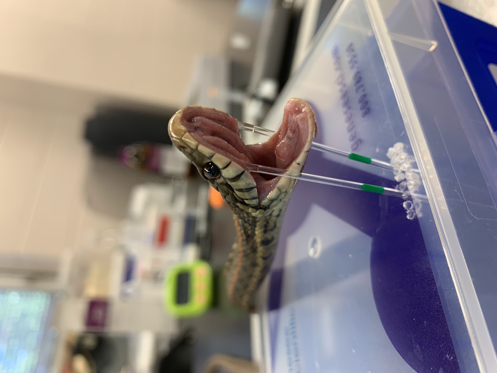
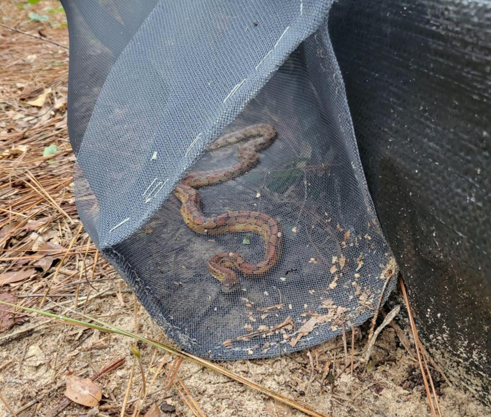
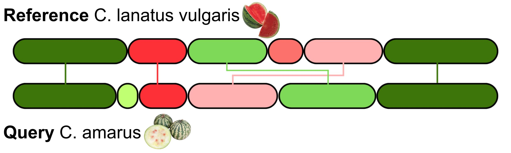
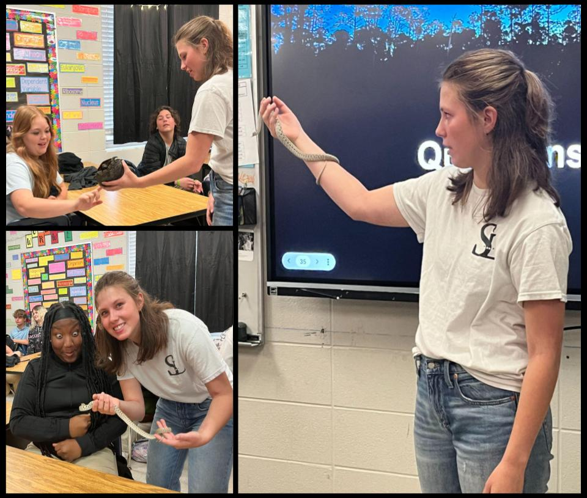
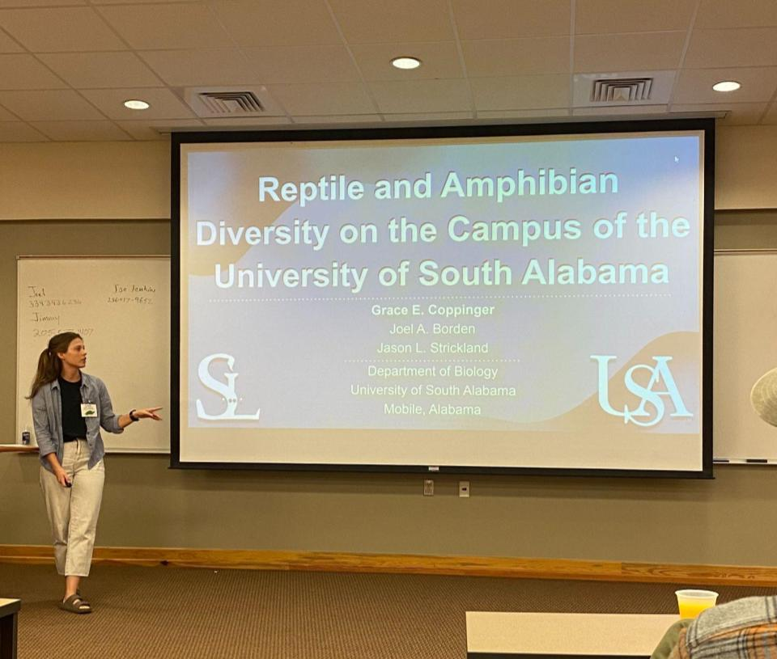

About

Aspiring Geneticist
My name is Grace Coppinger and I am an undergraduate studying genomics and bioinformatics. I aspire to earn a P.h.D in Genetics with an emphasis in bioinformatics working on molecular genomics and coevolution. I am interested in understanding the genomic structure of coevolution systems and utilizing bioinformatics to enhance that understanding. Throughout my undergraduate career I have worked hard to improve myself as a student, scientist, and person. Through my many research opportunities I have learned a lot about the science community and undergraduate research.I hope to share what I have learned during my undergraduate career with others so they can learn from my experiences. My effort spent working on undergraduate research has placed me on the path to becoming a leader in genomic research. While I still have a lot to learn, I look forward to more moments where I can help others reach their goals as well. Check out my github page to read more about “writing your first proposal” “how to get started in undergraduate research” and “how to begin coding”. These are written from my experiences and I hope other students in stem can benefit from this information.
Research
Venom Transcriptomics
Venomous species, particularly snakes, have captured human interest for years. Over the last few decades, scientists have been studying front-fanged venomous snakes to develop drugs, treat human disease, better manage snakebites, and to answer ecological and evolutionary questions. These studies have largely ignored rear-fanged snakes which account for two-thirds of snake biodiversity. By working with the SSSTING lab, I will begin to address the lack of knowledge about rear-fanged snake venom. I am sequencing the messenger RNA from the venom gland in the Common Garter Snake, Thamnophis sirtalis. Snakes in the genus Thamnophis produce relatively small amounts of venom and have not been previously studied for their venom. I have collected venom and Duvernoy’s gland tissue from nine males and nine females of various sizes and ages. Once sequencing is complete I will identify the unique toxins present in their venom and their relative expression. The sequences can then be used by other researchers to determine if any can be used to treat human diseases and provide data on rear-fanged species for understanding more about their biology.
Reptile and Amphibian Biodiversity in Southern Alabama
Reptile and amphibian populations are declining worldwide. They face a variety of challenges, including habitat fragmentation, pollution, and increased pathogen prevalence. Because of the global decline, small natural areas are becoming more important to maintain biodiversity, particularly for reptiles and amphibians. The University of South Alabama’s (USA) main campus has 95 acres of natural area accessible via the Glen Sebastian Nature Trails. It has a diversity of habitats that includes gum swamp, impounded creeks, mixed-deciduous/pine woodlands, riparian corridors, and cypress hammocks which may serve as a refuge for reptiles and amphibians common in SE Alabama. In 2021 and 2022, I led data collection where we used PVC pipes to capture treefrogs and pitfall traps, funnel traps, and drift fence arrays to catch ground-dwelling species. I found 7 species of reptiles, 17 species of amphibians, and added 147 records to the database. By culminating mine and previous data from 2008 to the present I was able to record species numbers. Additionally, my contribution earned coauthorship on a publication accepted in Herpetological Review which will be published in June 2023. We found 28 reptile species (6 lizards, 12 snakes, 9 turtles, 1 crocodilian) and 12 amphibian species (8 frogs and 4 salamanders). The most abundant reptile was the Eastern Box Turtle and the most abundant amphibian was the Southern Toad. The majority of species have been detected across multiple years indicating stable populations. USA's natural area is a positive refuge for reptiles and amphibians and small habitat patches like the one on USA’s campus will take on increased importance to maintain biodiversity in the future.
Identification of structural variants between wild and cultivated watermelons through whole genome comparison
During the summer of 2023 I was awarded an REU at Cornell University working for the Boyce Thompson Institute. During my time there I worked on structural variant identification in watermelon crops. Structural variants (SVs) are complex rearrangements in the genome, including insertions, deletions, inversions, and translocations. SVs are responsible for a large proportion of the documented domestication traits. Through comparative genomics studies, SVs could be identified between cultivated and wild watermelon species which may underlie the known differences in desirable and undesirable traits.In order to enhance our understanding of gene/trait associations between wild and cultivated watermelon crops, I conducted a comprehensive comparative study between two representative accessions from C. lanatus subsp. vulgaris (cultivated) and C. amarus (wild). I identified SVs through comparing two high-quality genome assemblies and assessed their potential impacts by integrating functional annotation and transcriptome analysis.
A Ticking Time Bomb: Testing how viral infection modifies salivary gland gene expression
Ticks are a major disease vector and are capable of spreading more pathogen species and greater pathogen diversity than any other arthropod group. The invasive Asian Longhorned Tick (ALT) is a novel tick vector in the U.S. that may exacerbate disease spread. To test how tick feeding and virus infection modify ALT salivary gland gene expression, I have completed lab work and will be using bioinformatics to identify salivary proteins that may facilitate virus transmission in spring 2023. I will also use the reference genome of the ALT to perform further analysis of the tick transcriptome to identify transcription factors that are up-regulated in virus-infected ticks. I am paid as an undergraduate research assistant for this project and will be working under the College of Medicine, and the SSSTING lab to assist in the completion of this project.
Publications
In Revision
Canterbury, D.N., G.E. Coppinger, S. Morris, and J.L. Strickland. Hyla gratiosa (Barking Treefrog) Axanthism. In press in Herpetological Review.
Presentations
ALAPARC 2022
Coppinger, G.E. and J.L. Strickland. Understanding Venom Transcriptomics of the Rear-fanged Snake Thamnophis sirtalis. 2022 Meeting of the Alabama Partners in Amphibian and Reptile Conservation (ALAPARC), Andalusia, Alabama.
Undergraduate Research Symposium 2022
Coppinger, G.E. and J.L. Strickland. Understanding Venom Transcriptomics of the Rear-fanged Snake Thamnophis sirtalis. 2022 Undergraduate Research Symposium at The University of South Alabama, Mobile, Alabama.SEPARC 2021
Coppinger, G.E., J.L. Strickland, and J.A. Borden. Reptile and Amphibian Diversity on the University of South Alabama’s Campus. 2022 Meeting of the Southeast Partners in Amphibian and Reptile Conservation (SEPARC), Hosted Virtually.Undergraduate Research Symposium 2021
Coppinger, G.E. and J.L. Strickland. Understanding Venom Transcriptomics of the Rear-fanged Snake Thamnophis sirtalis. 2021 Undergraduate Research Symposium at The University of South Alabama, Mobile, Alabama.Outreach
Insert text here
 